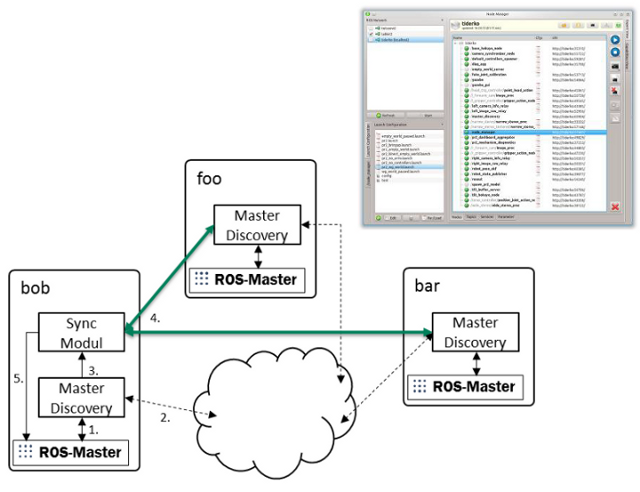

Overview
This package offers a set of nodes to establish and manage a multimaster network. This requires no or minimal configuration. The changes are automatically detected and synchronized.
Packages:
-
Master Discovery -- discovery using multicast or zeroconf
Master Synchronization -- Synchronize local ROS master to remote ROS masters
Node Manager -- A GUI to manage the configuration on local and remote ROS masters
Node Manager Daemon -- Helper node allows an easy launch file management and (auto)start of {remote}nodes
- The master_discovery node connects to the ROS-Master, gets changes by polling (1.) and publish the changes (multicast or/and unicast) over the network (2.). The received changes of the remote ROS-Master are published to the local ROS topics (3.).
- The master_sync node connects to the discovered master_discovery nodes (4.), requests the actual ROS state and registers the remote topics/service by local ROS master (5.).
- The node_manager simplifies launching and managing the ROS multi-master system. It also offers options for managing nodes, topics, services, parameters and launch files through node_manager_daemon. Can also be used in a single ROS master system!
